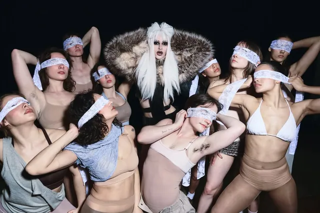
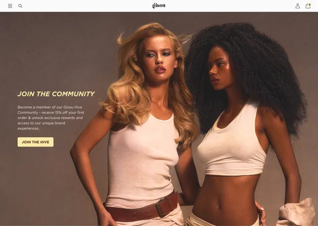
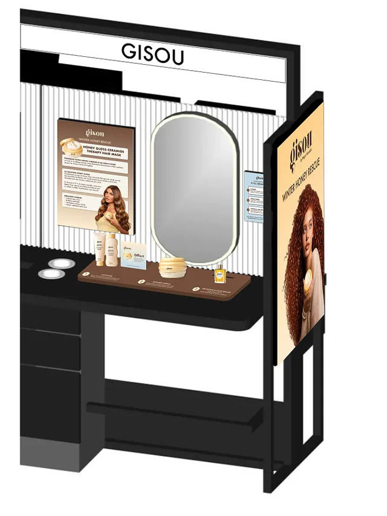
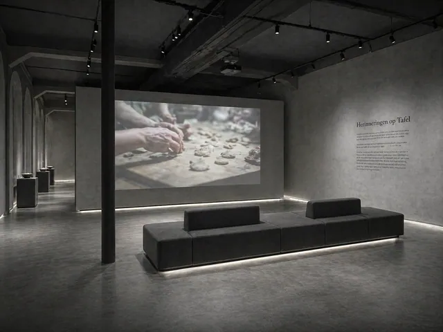
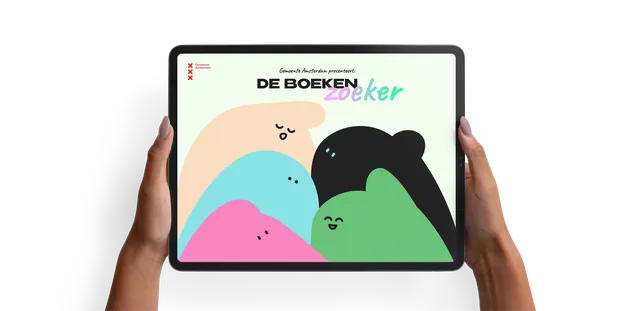
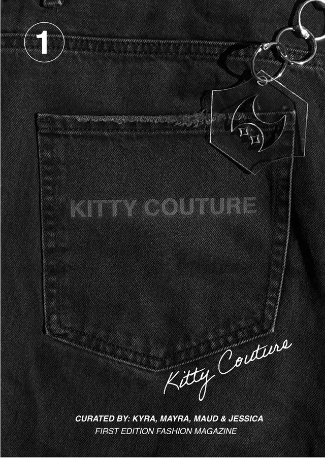
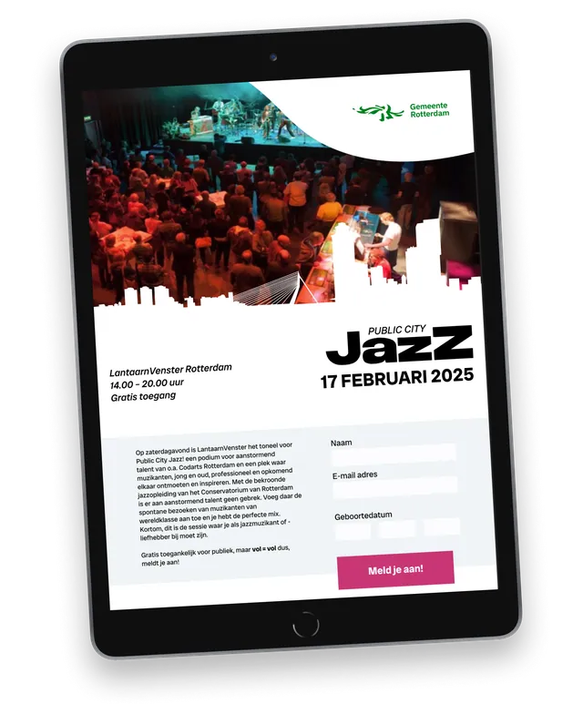
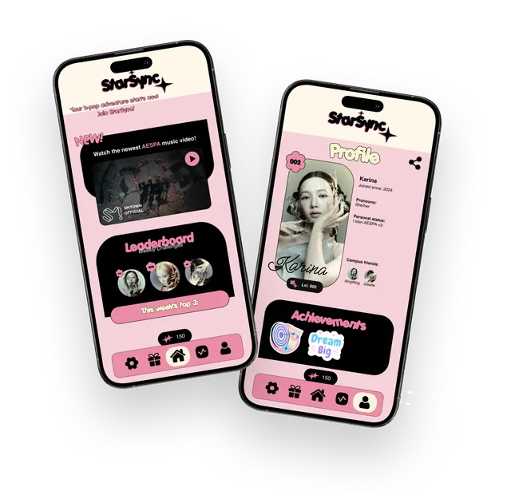
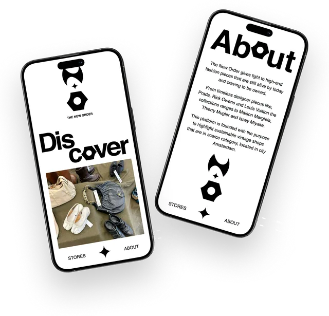
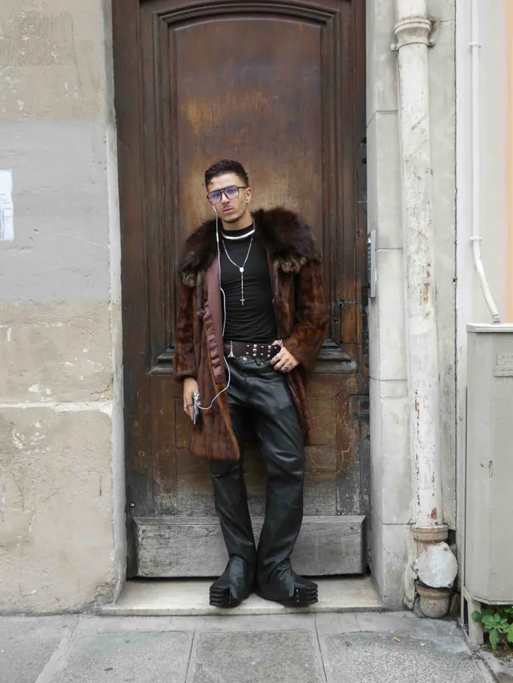

17 entries · 2022–2026
Indexof work
Every project, newest first. Filter by discipline, or hover a title for a glimpse.
2026
- 01Cult ClassicsMUA work@garmentmagazine (unpublished)2026

- 02Gisou Digital Design ConceptUX/UI DesignCampaign concept for Gisou2026

- 03Gisou Retail Design ConceptGraphic DesignSephora Beauty Hub & EDG environments2026

- 04Herinnering aan TafelUX DesignWereldmuseum Amsterdam2026

- 01Cult ClassicsMUA work@garmentmagazine (unpublished)2026
2025
2024
- 08BoekenZoekerUI DesignMunicipality of Amsterdam2024

- 09Kitty Couture Fashion MagazineZine / EditorialPrinted fashion magazine2024

- 10Public City JazzUI DesignTablet, iPhone, desktop2024

- 11StarSyncUI DesignMobile app concept2024

- 12The New OrderUI / Front-end2024

- 13Paris Fashion WeekPhotographyStreet-style photo essay2024

- 08BoekenZoekerUI DesignMunicipality of Amsterdam2024
2023
2022